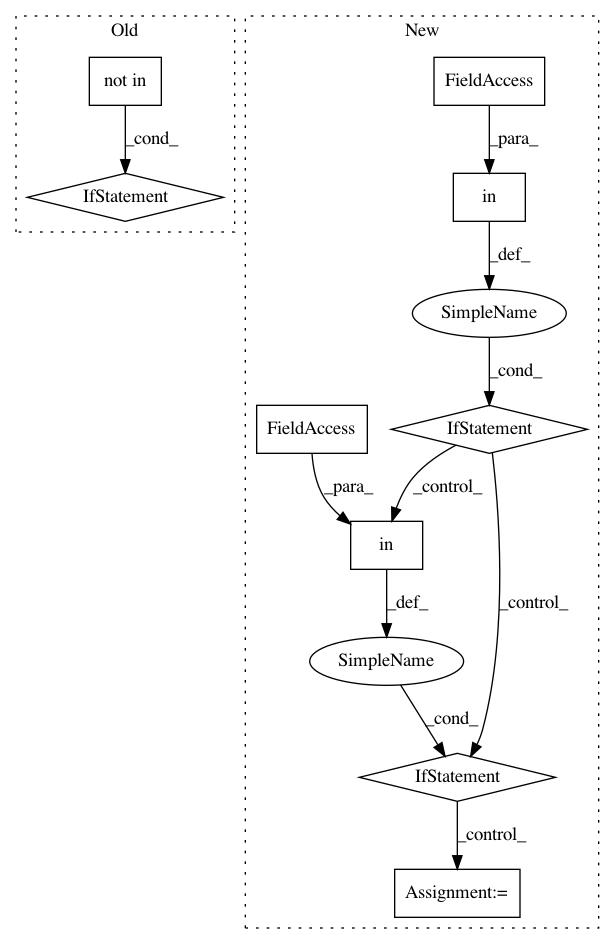

ca9abd88692e249e5897ed5ff25356887002895c,plugins/heuristics/dns_verify/dns_verify.py,,verify_dns_record,#Any#Any#Any#Any#,99
Before Change
resolved_addresses.add(addr)
else:
// if outbound traffic to non-resolved ip, flag
if packet["dest_ip"] not in network_machines:
if packet["dest_ip"] not in resolved_addresses:
return "TODO: signaling packet of interest"
channel.basic_consume(verify_dns_record, queue=queue_name, no_ack=True)
channel.start_consuming()
After Change
packet = ast.literal_eval(body)
src_addr = packet["src_ip"]
if src_addr in network_machines:
if "dns_resolved" in packet:
// if dns packet then update resolved addresses
if src_addr in dns_records:
for addr in packet["dns_resolved"]:
dns_records[src_addr].add(addr)
else:
new_record = DNSRecord(src_addr)
for addr in packet["dns_resolved"]:
new_record.add(addr)
dns_records[src_addr] = new_record
else:
// if outbound traffic to non-resolved ip, flag
if packet["dest_ip"] not in dns_records[src_addr]:
return "TODO: signaling packet of interest"
channel.basic_consume(verify_dns_record, queue=queue_name, no_ack=True)
channel.start_consuming()
In pattern: SUPERPATTERN
Frequency: 3
Non-data size: 9
Instances
Project Name: CyberReboot/poseidon
Commit Name: ca9abd88692e249e5897ed5ff25356887002895c
Time: 2016-06-29
Author: tlanham@iqt.org
File Name: plugins/heuristics/dns_verify/dns_verify.py
Class Name:
Method Name: verify_dns_record
Project Name: apple/coremltools
Commit Name: 3e530f0fb84ba99e7cb6e84cc3547f1e1e5f01eb
Time: 2019-09-27
Author: bsonawane@apple.com
File Name: coremltools/converters/nnssa/coreml/ssa_converter.py
Class Name: SSAConverter
Method Name: convert
Project Name: EpistasisLab/penn-ml-benchmarks
Commit Name: d78a9d2692be1e7a32d157cf870126fe7abe6643
Time: 2017-12-27
Author: weixuanf@pennmedicine.upenn.edu
File Name: pmlb/pmlb.py
Class Name:
Method Name: fetch_data